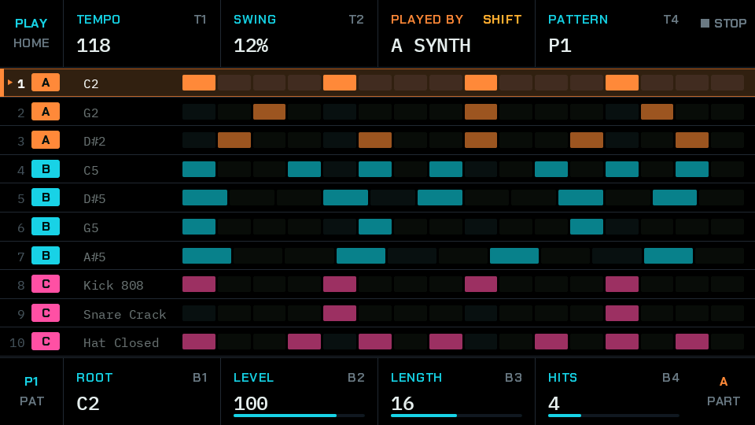
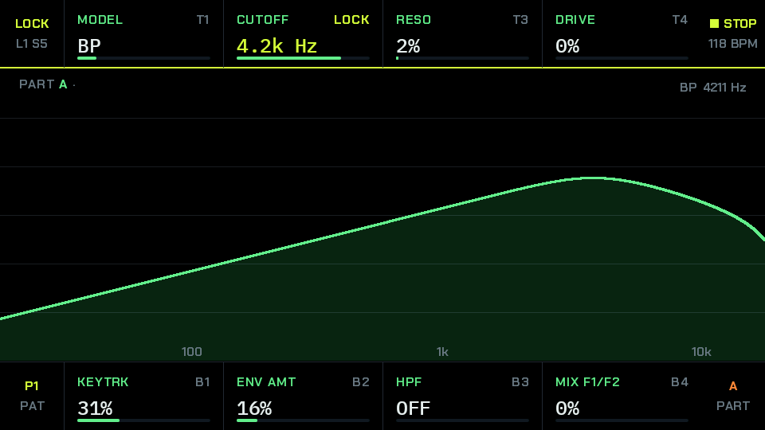
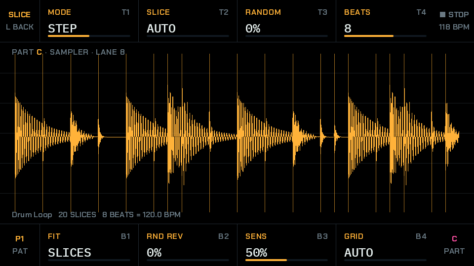
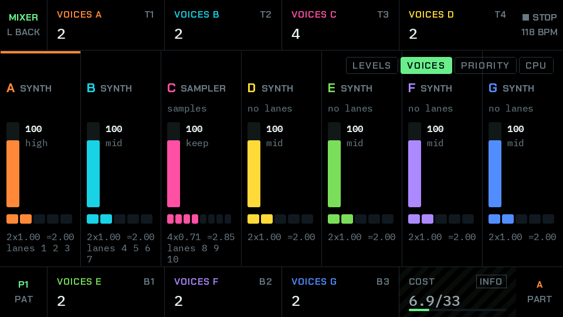
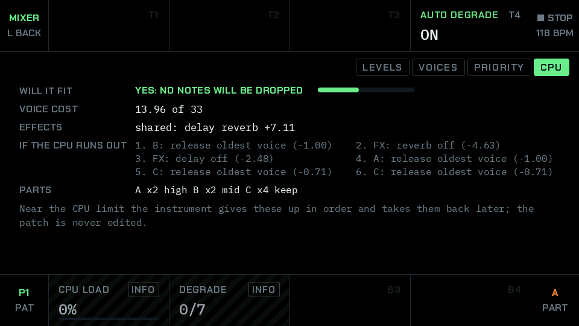
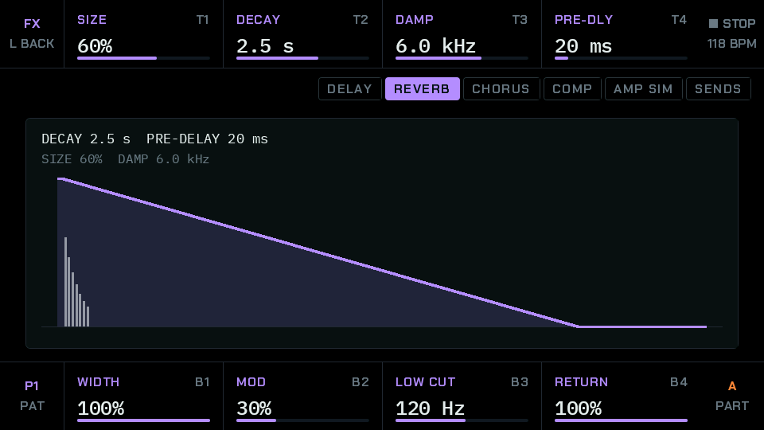
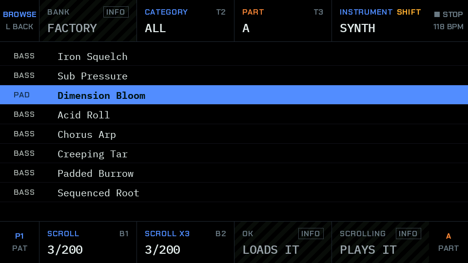
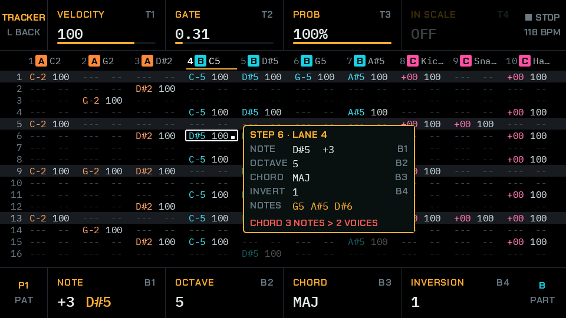
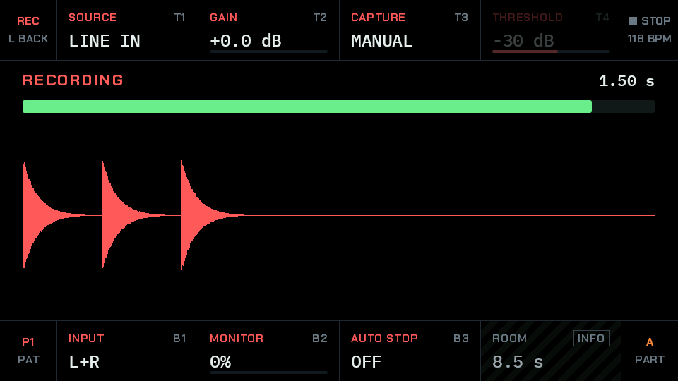
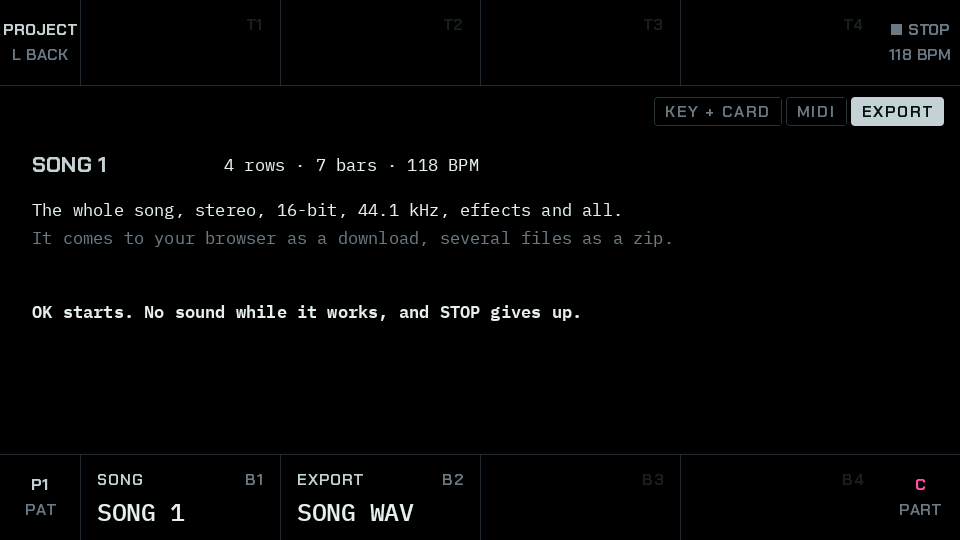

A groovebox firmware with a real synth inside
Nemesis is unofficial firmware for the Randomwaves Drumboy Pro. It turns the box into seven parts of synth and sampler, played by ten lanes, with effects behind them. You can try it in this browser, because the page runs the firmware's own code.
New in Beta 2
- Tracker. STEP's third view: notes as text, all ten lanes at once, with a box at the cell for note, octave and chord.
- Export. A song as one WAV, as stems for each lane, or as a MIDI file.
- Factory projects. DEMO, TECHNO and MASCHINE, the last two built on p-locks, ready to play or take apart.
- Start from nothing. A Drumboy now starts with an empty project, and one long hold on the small ring empties a pattern.
- Thirty project slots. In one scrolling list, and you can delete a project, with an undo.
- Sync. MIDI clock in and out, the SYNC sockets, and a sustain pedal.
- Sample browser. A card holds thousands of samples: pick a folder, then a sample, from any sample knob.
- Preset editor. Make and change presets in your browser, and hear them as you go.
- Sixteen tutorial lessons. Now with recording, slices, loops, the tracker, projects and exporting.
- A manual. Read it here, or take the PDF: getting started, then every feature, key and knob.
Stage select
Ten stages, ten real screens. Each one is drawn by the firmware's own code and saved as it came out. Only the orange labels are added.
- Stage 1Sequencer
- Stage 2Sound
- Stage 3Slices
- Stage 4Mixer
- Stage 5CPU
- Stage 6Effects
- Stage 7Presets
- Stage 8Tracker
- Stage 9Recording
- Stage 10Export
The whole pattern at a glance

1 2 3 4This is where you live. All ten lanes are on one screen while the music plays, so you never hunt through pages to see what is going on.
- The part that plays each lane. Every part keeps its colour on every screen.
- Each block is a step that plays. Lanes can have different lengths, up to 32 steps, so a short lane falls across the others.
- LENGTH and HITS spread a rhythm evenly across the lane. Turn them and a Euclidean pattern appears.
- Eight knobs, eight boxes. Each box says what the knob beside it does right now.
Shape a sound, then shape one step

1 2 3Nine pages of knobs cover the whole synth, and most of them draw what they do. Open a lock on a step and those same knobs change that step alone.
- The filter, drawn as you turn it, with eight models to choose from.
- LOCK: this cutoff belongs to one step. The rest of the pattern keeps its own.
- Yellow means you are locking, not changing the sound: lane 1, step 5.
Chop a loop in one move

1 2 3 4Turn slicing on and the firmware finds the hits itself. Play the slices by step, by chance, or in time with the tempo. This loop is mixed from the built-in drums.
- Every line is a cut. The firmware found these attacks on its own, with no computer.
- 20 slices, and it works out that 8 beats make 120 BPM.
- STEP plays a slice per step. SYNC runs the loop in time with the tempo.
- SENS sets how small a hit counts. GRID cuts into equal parts instead.
Seven parts, one mixer

1 2 3 4Every part has a column with its type, level and priority, and you decide how many voices each one gets.
- Parts A to G. Any of them can be a synth or a sampler.
- One block per voice the part owns. A block turns white while that voice sounds.
- What each part costs, and which lanes it plays.
- The whole project against the budget of 33 plain voices.
It tells you if it will fit

1 2 3 4A small chip plays every voice, so sounds have a cost. Nemesis shows that cost before you hit a wall, and it says what it would do about it.
- The answer, in plain words.
- What the voices and the effects cost, in the same units.
- What goes first if the CPU runs short, in order, with what each step saves.
- It takes them back when there is room. Your sound is never edited.
Effects you can see

1 2 3Delay, reverb, chorus, a compressor and an amp on each part. Each page draws what the effect is doing.
- Six views, one press apart: five effects and the sends.
- The reverb's decay and pre-delay, redrawn with every turn.
- Low cut and return level keep it out of the way of the mix.
200 sounds, one knob away

1 2 3Scroll and listen. There are 200 presets in 11 categories, and you can audition them on the part you are working on.
- Pause on a preset and it plays. OK loads it.
- Pick a category: bass, lead, pad, keys, texture and more.
- One knob scrolls one by one, the other three at a time.
Write notes as text

1 2 3 4STEP's third view shows the steps as text, with all ten lanes side by side. It is the same pattern as the step editor, so use whichever suits the job.
- Press OK on a step and this box opens beside the cell, with its note, octave and chord.
- All ten lanes at once. Keys 1 to 10 jump to a lane, and the keys around OK move the cursor.
- The bottom knobs set the note, the octave and the chord. Hold OK and press the keys around it to move a note instead.
- The top knobs set how hard it plays, how long, and its chance of playing. In the browser, your computer's letter keys are a piano.
Sample anything, keep it on a lane

1 2 3 4Record the line input, or Nemesis itself with all its effects. A take lands on the lane you are on, as a sample like any other, so you can slice it, loop it and lock it.
- SOURCE is the line input, or what Nemesis is playing, effects and all.
- AUTO waits for the sound to pass THRESHOLD, and keeps the moment before it.
- The meter. Watch it while you set GAIN.
- The take as it comes in. On the card it goes to Sample/REC. Online Nemesis has a drum loop in place of a cable, so you can try the real recorder in your browser.
Take the song with you

1 2 3When a song is done, take it with you. A render runs offline and in silence, so it never drops a voice.
- The third view of PROJECT.
- It says what you will get and where it goes: the card on a Drumboy, your downloads in Online Nemesis.
- Pick the song, then one stereo WAV, stems (a WAV for each lane that plays, so the kick and the snare can be mixed apart), or a MIDI file with a track for each lane.
Hi-scores
No made-up numbers. Each one is built into the firmware, or was measured on a real Drumboy Pro.
| Score | Name | Source |
|---|---|---|
| 000200 | Presets 3 built in, 197 as files on the card | Built in |
| 000064 | Rows in a song and 8 songs in a project | Built in |
| 000033 | Plain voices of CPU budget the firmware's own cost table | Built in |
| 000032 | Slices in a sample cut at its attacks or on a grid | Built in |
| 000032 | Steps in a lane each lane has its own length | Built in |
| 000016 | Patterns in a project | Built in |
| 000014 | Voices at 85% CPU held notes of a light preset with the usual reverb | Measured |
| 000010 | Lanes all on one screen | Built in |
| 000008 | Filter models in two filters, in series or parallel | Built in |
| 000007 | Parts each a synth or a sampler | Built in |
Lowest score wins: 000000 audio blocks over budget, with six synth parts of two voices each and drums playing a sequence, at 54 to 71% of the CPU on average. That is with the load governor on, which gives up voices and effects when a mix asks for too much. Measured
Power-ups
Everything Nemesis has picked up so far, and what is still locked.
- EuclidHits and rotation on any lane
- Chords12 types, with inversion, voicing and strum
- ArpeggiatorFour directions, up to 4 octaves
- Scale lock12 scales for the synth notes
- P-locksUp to 8 changes on a single step
- ChanceAny step can have a chance of playing
- Two oscillatorsPlus a sine sub and noise
- WavetablesFrom the card, six banks in memory at once
- Ring and syncRing modulation and oscillator sync
- Two filtersEight models, in series or parallel
- GritBits, sample rate, drift and clipping
- UnisonUp to 4, with detune and width
- Sampler12 built-in samples, plus your WAV files
- SlicesUp to 32, each with its own pitch and level
- Choke groupsFour, for hats that cut each other
- Delay, reverb, chorusWith a send from each part
- AmpFour models and three cabinets on each part
- CompressorOn the master
- ClockTempo 40 to 240 BPM, swing up to 50%
- MIDIIn and out, with a channel and note for each lane, and a sustain pedal
- Screen960 x 540, with four mixer views
- Sample loopsCrossfades, four curves and Auto Loop
- RecordingFrom line in or its own output, with auto capture above a level
- SyncMIDI clock and the SYNC sockets, in and out
- TrackerNotes as text, with a box at the cell
- Sample browserA folder, then a sample, from any sample knob
- Song to WAVOffline, so it never drops a voice
- StemsA WAV for each lane that plays
- MIDI filesA song as notes, a track for each lane
- Factory projectsDEMO, TECHNO and MASCHINE
- 30 project slotsWith delete and undo
- Preset editorIn your browser
- MIDI librarianComingReads a real Drumboy over MIDI. Sending waits for its test
Before you play
Beta 2 is here. It is a test version, so expect bugs. Install it on your Drumboy Pro.
The voice, the sequencer, the effects, the seven parts, saving to the card and recording have all run on a real Drumboy Pro. Slices and the tracker have mostly been tested on a computer so far. The MIDI sockets have carried notes, clock and the librarian on a real cable, and exporting and deleting projects have not yet been tried on many cards.
Saving went through 3,000 rounds of writes and read-backs on one real card without an error. Power cuts have only been tested in simulation, so keep a copy of your card.
Continue?
Online Nemesis Tutorial Install Beta 2 Manual Manual PDF Preset librarian
Nemesis is free software, given as it is, with no warranty of any kind. You use it at your own risk. Keep a copy of your SD card: a power cut during a save, or a failing card, can lose data, and installing other firmware on your device is your own choice. The makers accept no liability for lost data or for damage to cards or devices.
Nemesis is an independent project, not made by Randomwaves. The Drumboy Pro is their open-source hardware.